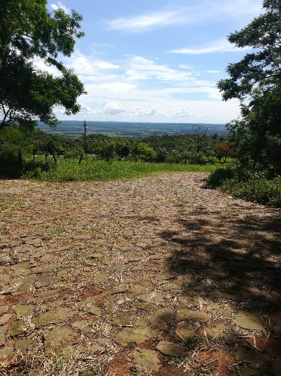

Viveros
Sobre la ruta a cabañas se encuentran varios viveros con distintos tipos de plantas. La realidad social es que cada vivero recibe la visita de varios clientes de la zona y de otros lugares. Pudimos observar variados tipos de plantas como:
flores de copa de vino con un color rojo oscuro, rojo pana, orquídeas, mariposas, entre otras clases de flores, con espina, pino, macetas, entre otros más.
Viveros
Los costos de los productos varían desde 10 mil guaraníes en adelante. Las actividades realizadas en el lugar son: Exposición de flores llamado Yvoty Rape, festivales, etc. Otros eventos que se podrían desarrollar son: Circuito de las flores
en las veredas hermoseando la ciudad, festivales con varios artistas, entrevistas a productores del lugar promocionando sus productos a través de videos publicitarios.
Tape tuja
Es un camino que se encuentra terminando Cabañas y cruzando Atyrá. Empedrado de gran tamaño que construyeron los presos bolivianos durante la guerra del Chaco. Se puede observar por ejemplo motocicletas utilizando el camino como atajo para
llegar a la ruta 2 y varios otros móviles.
También existen árboles que dan sombra a lo largo del camino. Las calles con empedrados con una buena variedad de plantas a su alrededor y pequeñas avenidas. Las actividades que se podrían realizar son carrera a caballos, feria de plantas
de viveros, etc.
Imágenes

Paisaje del camino que va a la ruta 2